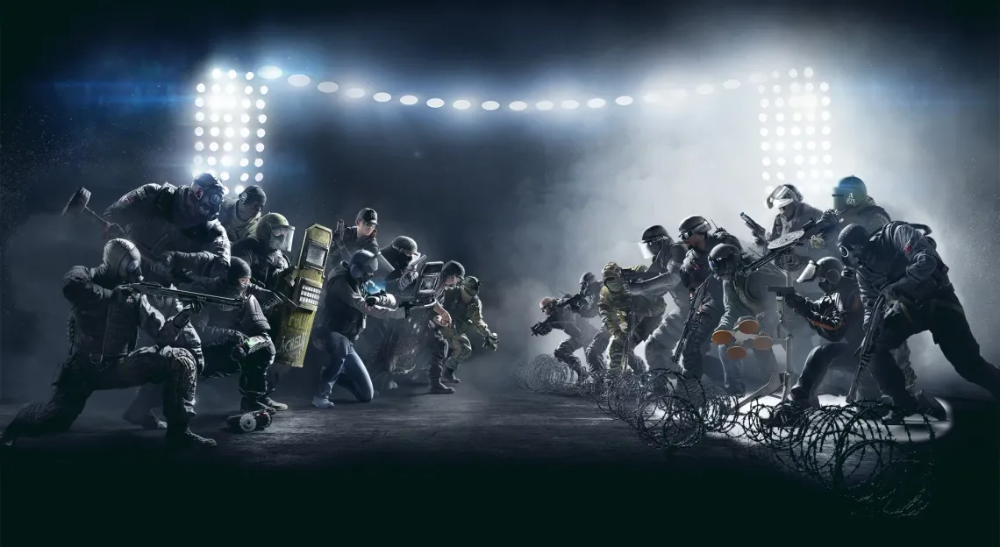

Tom Clancy's Rainbow Six: Siege es un videojuego de disparos táctico en línea desarrollado por Ubisoft Montreal y distribuidor por Ubisoft. Salió a la venta en todo el mundo para Microsoft Windows, PlayStation 4 y Xbox One el 1 de diciembre de 2015 y para PlayStation 5 y Xbox Series X|S el 1 de diciembre de 2020. El juego pone mucho énfasis en la destrucción del entorno y en la cooperación entre los jugadores. Cada jugador asume el control de un atacante o un defensor en diferentes modos de juego, como rescatar a un rehén, desactivar una bomba y tomar el control de un objetivo dentro de una habitación. El título no tiene campaña, pero cuenta con una serie de misiones cortas, fuera de línea, llamadas "situaciones", que pueden jugarse en solitario. Estas misiones tienen una narrativa suelta, centrada en el entrenamiento de los reclutas para prepararlos para futuros encuentros con las "Máscaras Blancas", un grupo terrorista que amenaza la seguridad del mundo.
Siege es una entrada en la serie Tom Clancy's Rainbow Six y el sucesor de Tom Clancy's Rainbow 6: Patriots, un videojuego de disparos táctico que tenía un mayor enfoque en la narrativa. Después de que Patriots fuera cancelado por su aspecto técnico, Ubisoft decidió reiniciar la franquicia. El equipo evaluó el núcleo de la serie Rainbow Six y creyó que dejar que los jugadores se hicieran pasar por las principales unidades antiterroristas de todo el mundo era lo más adecuado para el juego. Para representar de la mejor forma las situaciones reales, Ubisoft consultó a unidades antiterroristas reales y se fijó en ejemplos de operaciones en la vida real. Con AnvilNext 2.0, el juego también utiliza la tecnología RealBlast de Ubisoft para crear entornos destructibles.
El juego tuvo una acogida muy positiva por parte de la críticos y el público, con elogios dirigidos sobre todo al multijugador y a su enfoque táctico, siendo considerado uno de los mejores juegos multijugador hasta la fecha.1 Ubisoft se asoció con la ESL para convertir a Siege en un juego de esports.2 En febrero de 2022, el juego superó los 80 millones de jugadores en todas las plataformas, y en abril de 2022, se anunció una versión para Android y IOS.3

Modos de juego
Existen 3 modos de juego que son:
Rehén: los atacantes deben localizar y extraer a un rehén de un edificio, mientras los defensores deben evitarlo.
Bomba: los atacantes deben localizar una de dos bombas y plantar o activar un sedax (Sistema Experto en Desactivación de Artefactos Explosivos). Los atacantes ganan la ronda si logran desarmar una bomba o si eliminan al equipo enemigo.
Asegurar la zona: los atacantes deben localizar una zona donde se encuentra un contenedor de material biológico peligroso y deben asegurar el área; para ello, deben permanecer en la sala durante 10 segundos consecutivos sin ningún defensor en el área.
A veces hay eventos como Six Invitational o Outbreak que por lo general añaden otro modo con diferente jugabilidad
Listas de partidas
Zona de aprendizaje: Este es un modo de juego para un solo jugador con misiones y objetivos específicos, que permitirán conocer a los operadores y aprender las mecánicas del juego. Estas misiones pueden jugarse en dificultad Normal, Difícil o Realista. Los rivales son controlados por la IA del juego.
Campo de maniobras: Antes "caza al terrorista". Es un modo de juego donde en solitario o en cooperativo hay que enfrentar a terroristas controlados por la IA. Puede elegirse el mapa, hora del día y hasta las ubicaciones de los objetivos.
Las partidas en línea se dividen en cuatro tipos:
Partida rápida: Las partidas rápidas (antes conocidas como "casuales") son a tres rondas y el emparejamiento se realiza de manera aleatoria, sin importar el rango de los jugadores.
Partida rápida descubrimiento: Cada vez que hay novedades sobre algún mapa disponible en el juego, se permite jugar partidas rápidas dentro de sí para reconocer mejor el escenario.
Jugador nuevo: Con el fin de que los jugadores nuevos aprendan más sobre el juego y sus mecánicas, se ha añadido este tipo de juego el cual sólo está disponible para los jugadores por debajo del nivel 10, para así sólo compartir partidas con jugadores igualmente aprendices.
Igualadas: Las partidas igualadas son a 4 rondas. La diferencia entre el equipo ganador y el perdedor ha de ser de 2 rondas, es decir, si hay empate a 3, se jugara a 5 rondas. Al haber más rondas, los puntos de reconocimiento y los créditos que se dan son mayores. Este modo de juego empareja a los jugadores con adversarios del mismo rango. Los rangos se van subiendo o bajando en cuestión de las partidas ganadas. En primera instancia se juegan 10 partidas y en función de las victorias y derrotas al jugador se le asigna un rango. Subir de rango es complicado y requiere ganar muchas partidas igualadas. El único modo de juego disponible en este emparejamiento es Bomba.Te pueden penalizar por abandono
No igualadas: Lo mismo a una partida igualada, pero abierta para nivel 10 o mayor y no afectará tu rango. El único modo de juego disponible en este emparejamiento es Bomba. Te pueden penalizar por abandono
Partida personalizada: En esta forma se podrá jugar bajo cualquier regla aplicable, así como diseñar cada detalle disponible. Evidentemente, no hay consecuencias de ningún tipo (rango, fama, etc.).
Rangos: Los rangos se definen mediante un sistema de puntos llamados MMR o ELO los cuales se van subiendo o bajando también subes o bajas de rango EJ: Plata (2100 - 2600 MMR)
Operadores
El juego cuenta con una amplia variedad de personajes elegibles, llamados operadores. Cada operador posee armas exclusivas y una habilidad única que puede utilizar durante los combates, como también estadísticas que determinan su nivel de blindaje y velocidad.
Estos personajes se dividen en 2 clases:
Atacantes: Son los encargados de rescatar al rehén, asegurar el contenedor de riesgo biológico o desactivar las bombas, dependiendo el modo de juego, además de matar a todos los defensores.
Defensores: Son los personajes responsables de defender y/o evitar que los atacantes aseguren el contenedor de riesgo biológico, liberen al rehén o desactiven las bombas.
Habilidades especiales de los operadores
Atacantes
Sledge (Seamus Cowden): Tiene un martillo el cual le permite destruir las paredes blandas si se encuentra suficientemente cerca.(Tiene 25 usos)
Thatcher (Mike Baker): Tiene cargas de pulso electromagnético la cual se lanza como una granada que al explotar inhabilita temporalmente la mayoría de dispositivos electrónicos defensores.(Tiene 3 granadas PEM)
Ash (Eliza Cohen): Va equipada con un lanzagranadas de proximidad cual se pega a las paredes y destruye a distancia cualquier superficie destructible.(Tiene 2 cargas)
Thermite (Jordan): Está equipado con dos cargas exotérmicas Brimstone BC-3, estas cargas pueden atravesar cualquier muro reforzado.(Tiene 2 cargas)
Montagne (Gilles): Tiene un escudo que puede ampliar para parar los daños que se provoquen delante de él. Mientras el escudo está ampliado no puede usar su secundaria, el único arma que lleva aparte del escudo. Su debilidad es que si el dron de Echo o las minas de Ela lo aturden se baja el escudo
Twitch (Emmanuelle): Tiene 2 drones de shock que están especializados, pueden disparar choques eléctricos a un objetivo y saltar, además uno normal para la fase de preparación.(Tiene 3 drones)
Fuze (Shuhrat Kessikvayev): Lleva consigo cargas de racimo que hacen un agujero en suelos o paredes y lanzan granadas hacia el interior.(4 usos)
Glaz (Timur Glazkov): Lleva un rifle francotirador OTs con una mira HDS desplegable. Esta mira és específica porque es la única que puede ver a través del humo
Blitz (Elias Kötz): Está equipado con el escudo táctico G52, que posee cargas para cegar temporalmente a los enemigos.(Tiene 5 usos con cooldown)
IQ (Monika Weiss): Va equipada con un dispositivo que detecta aparatos electrónicos, el MKIII. este dispositivo se puede usar a la vez que su pistola, pero no que su primaria
Buck (Sebastian Côté): Tiene acoplada a su arma una escopeta SK 4-12 de calibre 12 con la que rompe superficies y puede matar a sus enemigos.
Blackbeard (Craig Jenson): Tiene dos escudos antibalas los cuales puede equipar en el arma principal para evitar los disparos a la cabeza cada uno con 1 de vida. equipar el escudo hará que apuntes y corras más lento.
Capitão (Vicente Souza): Posee una ballesta táctica con dos utilidades una para echar humo y la otra para lanzar un gas mortífero a distancia.(2 usos por tipo de disparo)
Hibana (Yumiko Imagawa): Lleva consigo el X-KAIROS; con él puede abrir agujeros en muros reforzados.(3 disparos de 6 x Kairos cada uno)
Jackal (Ryad Ramírez Al-Hassar): Porta el dispositivo Eyenox Model III, capaz de identificar y rastrear las huellas de los enemigos durante 5 exposiciones cada exposición dura 4 segundos.(3 escaneos)
Ying (Sui Mei Lin): Posee el dispositivo Candela, un tipo de granada de destello que cuando es lanzada se divide en varias cargas. Puede arrojarse o sujetarse a superficies.(3 candelas)
Zofia (Zofia Bosak): Lleva consigo un lanzagranadas que puede disparar tanto municiones de impacto como aturdidoras. Además, podrá autoreanimarse cuando sea derribada, pero volviendo sólo con cinco puntos de vida.(2 disparos de impacto y 4 aturdidoras)
Dokkaebi (Grace Nam): Capaz de hacer una llamada para que los móviles de los defensores suenen dónde están ubicados. Puede hackear los celulares de defensores caídos para poder tener acceso a cámaras defensoras.
Finka (Lera Melnikova): Aplica una dosis de nanobots que le brinda a los aliados una capa de blindaje y mejora su puntería. Además, es capaz de levantar a un aliado caído en cualquier parte del mapa a menos que este muerto.(3 usos)
Lion (Olivier Flament): Utiliza el dron EE-One-D para revelar la posición de los enemigos cuando están en movimiento.( 3 escaneos)
Maverick (James Maverick): Posee un soplete capaz de derretir segmentos de las paredes reforzadas.
Nomad (Kashba Sehkra Mania): En su arma tiene acoplada un proyectil, el "Airjab" o "Mazazo aéreo", lo que hace que al lanzarlo a una superficie, se queda enganchada en ella y cuando un enemigo pase sobre su zona de activación esta explotará haciendo que esté salga disparado por los aires.
Gridlock (Tori Tallyo Fairous): Está equipada con 3 Trax Stingers, dispositivos que cuando se despliegan, se despliegan y se extienden en su proximidad. Al funcionar de manera similar al alambre de púas del defensor en el sentido de que ambos ralentizan a los oponentes y hacen ruido al atravesarlos.(3 dispositivos Trax Stingers)
Nøkk (Karina Gaarddhøje): Posee el HEL, un dispositivo el cual la hace invisible a las cámaras defensoras, conjuntamente con su "paso silencioso" al igual que Caveira, pero a diferencia de ella no hará ruido mientras no corra.
Amaru (Azucena Rocío Quispe): El dispositivo único de Amaru es la Garra Hook, un dispositivo que cuando se activa, dispara varios ganchos de agarre y luego la atrae hacia los ganchos. Esto le permite subir por las escotillas, ventanas del segundo piso o más altas y los tejados.
Kali (Jaimini Kalimohan Shah): Está equipada con el rifle CSRX 300, un poderoso rifle de francotirador de cerrojo que puede atravesar múltiples paredes rompibles y destruir barricadas de madera con un solo disparo.
Iana (Nienke Meijer): Su dispositivo es el replicador Gemini. Cuando se activa, crea un señuelo holografíco de ella, que puede controlar de forma remota como un dron.
Ace (Håvard Haugland): Tiene el dispositivo de violación de S.E.L.M.A., cuando se lanza a una superficie reforzada o no que se pueda romper, el S.E.L.M.A. Extenderá un conjunto de armas explosivas y luego detonará creando una amplia abertura que se puede usar para establecer una línea de visión.
Zero (Sam Fisher): Su dispositivo es el lanzador Argus, que lanza cámaras pequeñas. Estas cámaras pueden excavar en cualquier superficie, incluidas las paredes reforzadas. Proporciona una vista de cámara en ambos lados de la superficie desplegada.
Flores (Santiago Lucero): Su dispositivo es un dron de control remoto llamado ECR-RATERO; el cual tiene la posibilidad de anclarse a una superficie, blindarse y seguidamente explotar al cabo de 3 segundos. causando posibles muertes a enemigos. Es realmente parecido a la explosión remota C4. El jugador solo tendrá 10 segundos en total para controlar el dron, antes de que se active la cuenta atrás de este mismo y explotar. (4 Drones)
Osa (Anja Katarina Janković): Puede llevar en la mano su escudo antibalas transparente Talon-8 o desplegarlo en marcos de puertas , ventanas o en el suelo , lo cual le proporciona una línea de visión protectora mientras formula una estrategia de ataque.
Sens (Néon Ngoma ): El Sistema de proyección ROUE rueda cuando Sens lo lanza, y va dejando a su paso pequeños proyectores que crean una pantalla de luz. Aunque los objetos físicos pueden atravesar esta pantalla, es muy flexible, pues obstaculiza múltiples líneas de visión al mismo tiempo.
Grim (Charlie Tho Keng Boon): Su dispositivo es el Lanzador Colmena Kawan, este dispara un proyectil que libera un enjambre de pequeños robots que siguen el rastro de los oponentes que atraviesan el enjambre marcando su posición exacta durante un corto periodo de tiempo.
Defensores
Mute (Mark Chandar): Va equipado con inhibidores de señal GC90, que impiden que aparatos electrónicos (como drones, cargas explosivas o cargas de racimo) operen dentro de su rango.(3 inhibidores)
Smoke (James Porter): Tiene unas granadas de gas remotas con compuesto Z8 que daña a los enemigos.(3 granadas)
Castle (Miles Campbell): Refuerza puertas y ventanas con sus paneles de blindaje UTP-1, haciéndolas casi impenetrables.(3 paneles).
Pulse (Jack Estrada): Lleva consigo un detector de latidos HB-5 con el que localiza a sus enemigos a través de las paredes.
Doc (Gustave Kateb): Pistola curativa. Puede revivirse a sí mismo
Rook (Julien Nizan): Viene con una bolsa con 5 placas de blindaje R1N "RHINO". Estas placas de blindaje se pueden recoger y equipar para mayor resistencia al daño.
Kapkan (Maxim Basuda): Daña a sus enemigos con su dispositivo EDD MK II, un explosivo que se activa con un láser invisible que se coloca en puertas y ventanas.(5 trampas, con 60 de daño cada una)
Tachanka (Alexander Senaviev): Se equipa con un lanzagranadas de proyectiles igneos.
Jäger (Marius Streicher): Protege a sus compañeros de las granadas con su sistema de defensa activa SDA MK IV Magpie, que las inhabilita antes de que estallen.(3 magpie de 2 granadas por magpie)
Bandit (Dominic Brunsmeier): Trae consigo baterías de electrochoque CED-1 con las que electrifica objetos metálicos.(4 baterías )
Frost (Tina LIn Tsang): Coloca trampas para osos Sterling MK2 LHT que atrapan e incapacitan a sus enemigos.(3 trampas)
Valkyrie (Megan J. Castellano): Tiene cámaras giroscópicas MK2 que pueden colocarse en prácticamente cualquier parte de cualquier mapa con el objetivo de observar a sus enemigos.(3 cámaras)
Caveira (Taina Pereira): Tiene la capacidad de desplazarse con mayor sigilo y la habilidad de interrogar a un enemigo herido para revelar la posición de sus compañeros.
Echo (Masaru Enatsu): Despliega su dron Yokai con camuflaje óptico, que dispara ráfagas ultrasónicas con las que desorienta a los oponentes.(2 drones)
Mira (Elena María Álvarez): Con el dispositivo espejo negro puede crear aberturas en las paredes metálicas.(2 espejos )
Lesion (Liu Tze Long): Dispone de las minas Gu, trampas que contienen espinas con toxinas, que al activarse provocan en el enemigo un daño continuo hasta que el oponente se quite el dardo( 1 mira cada 30 segundos)
Ela (Elżbieta Bosak): Está equipada con las minas adhesivas Grzmot, explosivos que detonan y provocan la reducción en la movilidad, visión y puntería de los adversarios.(3 minas grzmot)
Vigil (Chul Kyung Hwa): Porta un traje de camuflaje que al activarse lo vuelve invisible contra los drones del equipo atacante.
Alibi (Aria de Luca): Coloca dispositivos que muestran un holograma con su imagen. Estos hologramas al ser traspasados con el cuerpo, balas o drones de los enemigos puede mostrar por tres segundos la ubicación y que operador enemigo es.(3 hologramas
Maestro (Adriano Martello): Usa dispositivos blindados con cámara que lanzan ráfagas contra el enemigo, únicamente el puede moverlos, pero dejando usar las cámaras fijas extra para sus compañeros.( 2 cámaras )
Clash :Tiene un escudo equipado con el que puede ralentizar a los enemigos quitándole de 5 en 5 de vida.
Kaid (Jalal El Fassi) Tiene 2 cargas, las cuales al tirarlas se enganchan a la superficie y electrifica lo que tenga alrededor de una circunferencia.
Mozzie (Max Goose): Sus lanzadores de plaga permiten piratear los drones enemigos que se acerquen a la trampa para luego usarlos el mismo.(3 plagas)
Warden (Collinn McKinley): Utiliza unas gafas especiales las cuales al activarse por un periodo de tiempo determinado es inmune a las granadas cegadoras y al quedarse quieto poder ver a través del humo.
Goyo (César Ruiz Hernández): Su dispositivo es el Escudo Volcán. Si bien parece un escudo desplegable desde el frente, tiene un gran bote explosivo oculto en la parte posterior. El explosivo detona cuando se le dispara, dejando una alfombra de llamas como un área de negación para los atacantes que intentan cruzarlo.(Tiene 2 Escudos)
Wamai (Ngūgī Muchoki Furaha): Su dispositivo es el Mag-Net, un poderoso electroimán que intercepta y redirige los proyectiles hacia el dispositivo haciéndolos detonar.(tiene 5 electroimanes)
Oryx (Saif Al Hadid): Su habilidad es el Remah Dash. Cuando se activa realiza una embestida con su cuerpo que puede romper paredes rompibles y tumbar a los atacantes.
Melusi (Thandiwe Ndlovu): Su dispositivo es el defensa sónica de Banshee, cuando se despliega en una pared o piso, el banshee emitirá un zumbido bajo cada vez que un atacante entre en su radio y línea de visión. Además de alertar a los defensores con su ruido, Banshee también ralentiza el movimiento de cualquier atacante.
Aruni (Apha Tawanroong): Su dispositivo es la puerta láser Surya. Cuando este dispositivo se lanza a una puerta, trampilla, ventana o cualquier tipo de pared. Crea una rejilla láser que cubre la mayor parte de la entrada.
Thunderbird (Mina Sky): Su dispositivo es la estación Kóna que al ser desplegada en el suelo actúa como un punto de seguridad para los operadores heridos y caídos. Todo lo que tienen que hacer es acercarse al dispositivo y la estación Kóna aumenta automáticamente el HP del operador u ofrece una reanimación.
Thorn (Brianna Skehan): Su dispositivo es el Razorbloom Shell, este se adhiere a una superficie después de que Thorn lo lanza. Poco después de detectar a un oponente cercano, automáticamente impulsa un conjunto de cuchillas afiladas en todas direcciones, provocando un daño letal.
Azami (Kana Fujiwara): La Barrera Kiba es un kunai modificado que se clava en una superficie después de lanzarla y libera un material que primero se expande y después se solidifica, creando una barrera antibalas que tapa los agujeros de tus defensas.